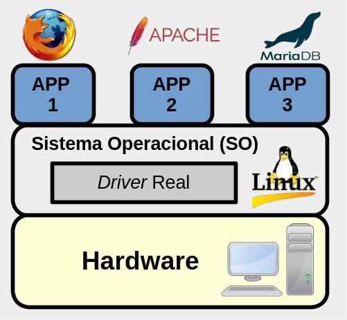
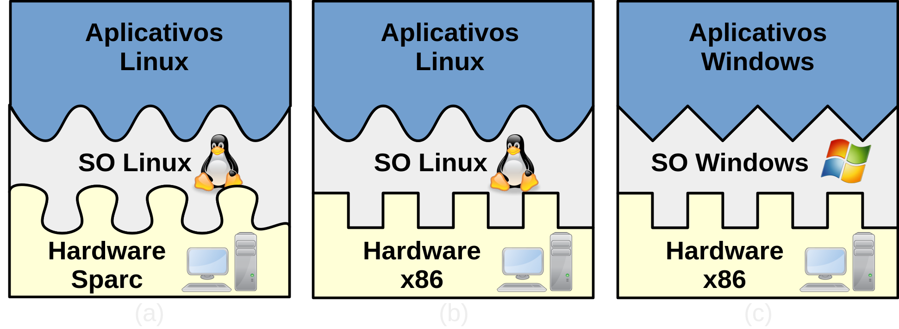
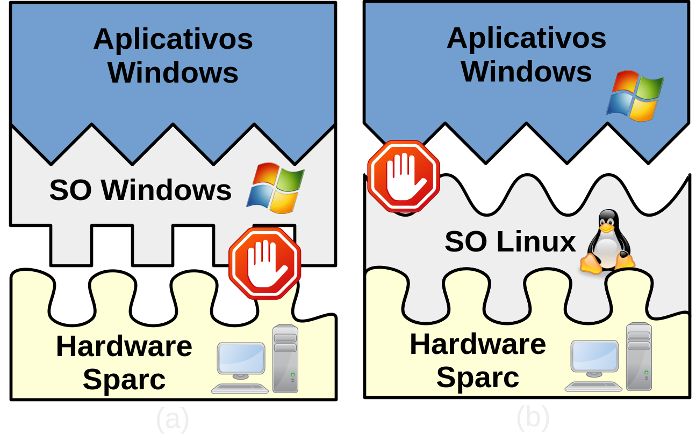
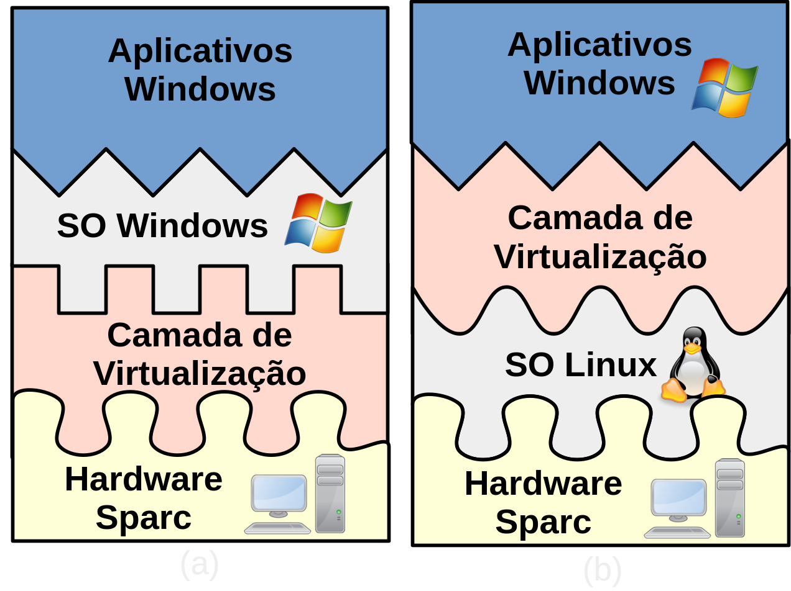
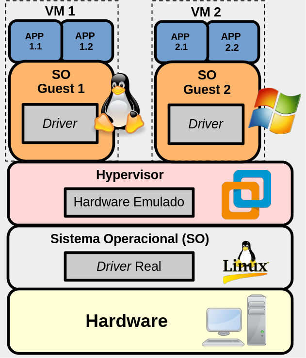
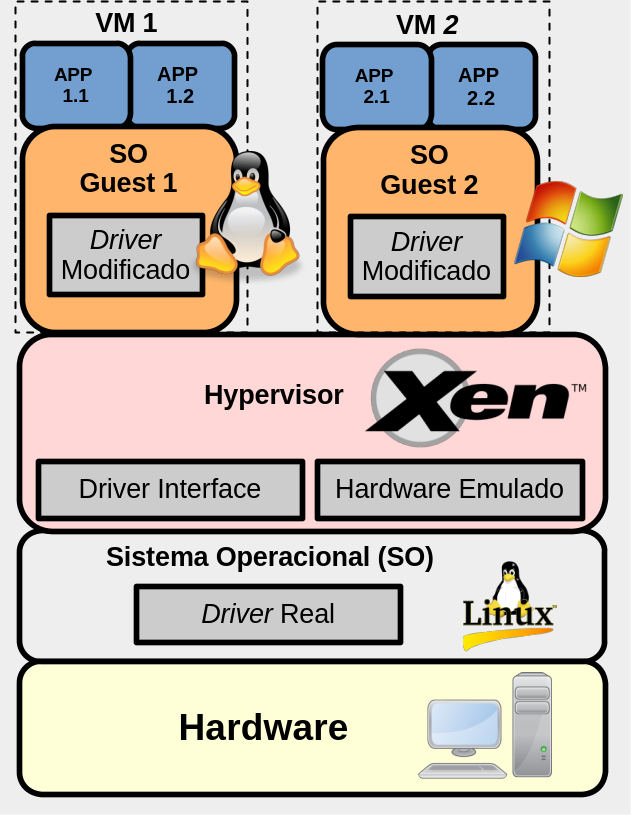
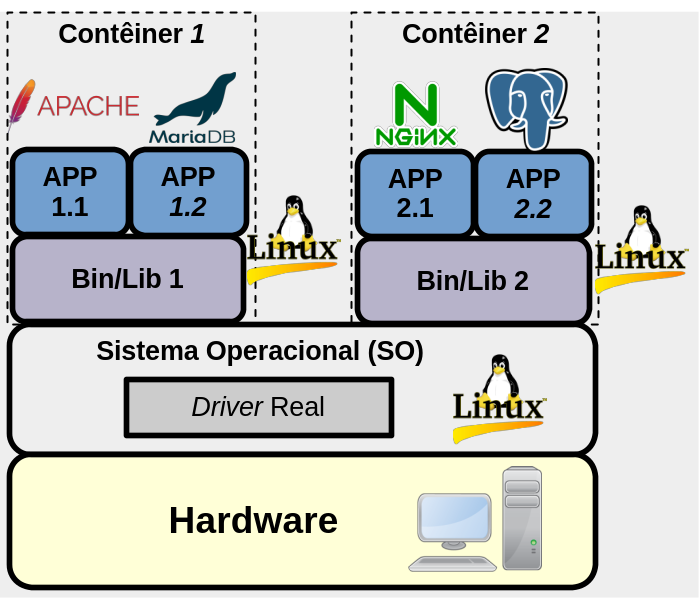

Virtualização
No contexto da informática, a virtualização tem ganhado grande notoriedade ao longo das últimas décadas. Isso se deve ao fato da virtualização trazer muitos benefícios, tais como:
- A facilidade de executar de forma isolada vários sistemas operacionais, dentro de um único computador físico;
- Executar sistemas criados para determinado hardware/sistema operacional em outro sistema distinto e até mesmo incompatível;
- Permitir a fácil migração de sistemas de um hardware de computador para outro, com um simples copiar de arquivo. Isso facilita, por exemplo, o gerenciamento de datacenters e ajuda na criação do conceito de nuvem (cloud computer).
Ao longo do tempo, a virtualização utilizou e ainda utiliza de várias técnicas, o que pode gerar alguma confusão na hora de definir o que é virtualização. Assim, a seguir, são apresentadas algumas definições para virtualização:
-
Segundo HUMBLE (2016), virtual significa algo que não é real, já na computação, virtual significa um ambiente de hardware que não é real. Desta forma, neste contexto da computação, a virtualização pode ser por exemplo, a execução de algum software em um hardware que é na verdade é um software fingindo ser um hardware.
-
Já CHAGANTI (2007), define virtualização como a técnica de dividir recursos de um único servidor em múltiplos ambientes segregados. Desta forma, cada ambiente virtualizado pode ser executado independente dos outros ambientes. Tornando possível, por exemplo, que cada um desses ambientes execute um sistema operacional diferente.
-
Conforme WILLIANS(2007), virtualização é um framework ou metodologia para divisão de recursos do hardware do computador para múltiplos ambientes de execução. Isso é feito aplicando-se uma ou mais técnicas de particionamento de hardware e software, compartilhamento de tempo (time-sharing), simulação parcial ou completa da máquina, emulação, qualidade de serviço e muitas outras técnicas.
Então, resumidamente, a virtualização permite executar vários sistemas em um mesmo hardware, todavia cada um desses sistemas virtualizados terão a percepção que eles estão em um computador dedicado só para ele, só que isso não é necessariamente verdade.
História
O conceito de virtualização não é novo, vem da década de 1960 e surgiu basicamente do conceito de compartilhamento de tempo (time sharing) e multiprogração.
Sim, time sharing e multiprogramação podem ser consideradas técnicas de virtualização, já que gerenciam o hardware sendo compartilhado entre vários processos, todavia são técnicas tão comuns, que as pessoas nem relacionam com virtualização, mas veja a definição anterior, de WILLIANS(2007).
Assim, em 1962, o computador Atlas apresentou melhoras de desempenho devido a separação de algumas operações do Sistema Operacional em um componente chamado supervisor. No Atlas, o supervisor gerenciava os recursos principais do computador para aprovisionar e gerenciar o ambiente computacional requeridos pelas chamadas de sistema dos programas de usuário. Desta forma, com o supervisor do Atlas, surge o hypervisor ou Virtual Machine Monitor (VMM), que são técnicas/termos utilizados na virtualização até hoje em dia.
Já na metade da década de 1960, o projeto M44/44X da IBM, que utiliza arquitetura similar à do Atlas, foi o primeiro a utilizar o termo Virtual Machine (VM), neste projeto foi utilizado o computador IBM 7044(M44) para executar VMs chamadas 44X, dai o nome M44/44X.
Este texto irá constantemente utilizar a sigla VM (Virtual Machine) se referindo ao sistema que está sendo virtualizado.
Bem, para entender melhor a virtualização, é necessário saber como funciona o básico de um sistema computacional sem a virtualização, isso é apresentado a seguir e posteriormente são explicados alguns tipos de virtualização.
Computador/sistema sem virtualização
Minimamente, um computador moderno é formado de:
- Hardware;
- Sistema Operacional (SO);
- e Softwares - também chamados de programas, aplicações, aplicativos (APP) - esses em execução são chamados de processos.
No exemplo da Figura 1, o computador utiliza o sistema operacional Linux, e há três softwares/processos em execução (APP1 - Firefox, APP2 - Apache HTTP e APP3 - MariaDB). Neste caso, o Linux gerencia a execução desses APPs, de forma que um não interfira no funcionamento do outro e consigam utilizar de forma harmoniosa, os recursos do computador. Ainda neste exemplo, se o Firefox for acessar a rede, ele pede para o Sistema Operacional, o sistema operacional por vez utiliza os drivers para acessar a placa de rede, e a placa de rede deve dar acesso a rede propriamente dita.
O funcionamento de um computador moderno é bem mais complexo do que foi apresentado anteriormente, mas isso já deve servir para o entendimento de virtualização. Todavia, caso você queira saber de mais detalhes, procure um livro de Sistemas Operacionais, tal como o do TANENBAUM.
|  |
|---|
| Figura 1 - Sistema sem virtualização |
Um detalhe a ser notado em um sistema computacional moderno, tal como apresentado na Figura 1, é que:
- O software é compilado para conversar com um sistema operacional específico (Linux, Windows, etc), pois cada sistema normalmente tem chamadas de sistemas distintas;
- O sistema operacional também deve ter a capacidade de conversar com o hardware, principalmente no que se refere à arquitetura do hardware (x86, x86_64, ARM, Sparc, etc). Assim, normalmente o sistema operacional é desenvolvido para interagir com um ou alguns hardwares específicos, mas dificilmente com todo tipo de hardware/arquitetura.
Isso significa que existem interfaces de comunicação específicas entre programas, sistemas operacionais e hardwares (ver Figura 2).
|  |
|---|
| Figura 2 - Interfaces de comunicação/interação entre as partes |
Tomando como exemplo a Figura 2, a imagem 2a representa um computador com sistema operacional Linux, sendo executado em uma arquitetura Sparc. Já a imagem 2b, representa o mesmo Linux sendo executado em uma arquitetura x86. Note que a parte da figura que interliga o SO com o hardware é diferente na imagem 2a e 2b, representando que o Linux deve ser moldado para conseguir interagir com o Sparc e com o x86. Agora na imagem 2c, é apresentada a ideia de um SO Windows, que está instalado em um computador x86. Neste exemplo, note que o Windows, da mesma forma que o Linux, foi moldado para conseguir ser acoplado no hardware x86. Todavia, como o Windows não dá suporte à arquitetura Sparc não é possível executá-lo neste tipo de hardware.
Ainda analisando a Figura 2 e sabendo que o Windows não pode ser executado em um computador Sparc, alguém pode estar se perguntando/pensando:
Supondo que o objetivo da pessoa é executar apenas o Microsoft Office.
Bem, não é tão simples assim, pois o sistema operacional é uma camada de abstração. Então, ao invés do programa ser desenvolvido para um hardware específico, ele é feito para um sistema operacional específico. Ou seja, uma das vantagens do sistema operacional, é que não é necessário se preocupar com o hardware. Assim, você programa para um dado SO e seu programa será compatível com os hardwares que esse SO tem suporte. Todavia, como descrito anteriormente, cada SO pode ter chamadas de sistemas distintas. Desta forma, um programa feito para o Windows não pode ser executado nativamente no Linux e o contrário também. É justamente isso que a Figura 2 mostra na parte das aplicações - a parte de conexão entre o aplicativo Windows é incompatível com o encaixe fornecido pelo Linux e o contrário também.
A Figura 3, deixa mais evidente esse problema de incompatibilidade entre as interfaces de comunicação dos programas, SO e hardwares. Neste caso o Windows não pode ser executado no hardware Sparc e a aplicação Windows não pode ser executada no Linux.
O exemplo da Figura 3 e o texto está apresentando a incompatibilidade do Microsoft Windows e seus softwares com outros hardwares e SO, mas isso é só um exemplo, tal problema não é exclusividade do Windows. Tal problema também se encontra em outros sistemas operacionais e seus programas.
|  |
|---|
| Figura 3 - Incompatibilidade entre as interfaces de comunicação dos computadores |
A seguir serão apresentadas abordagens de virtualização para resolver o problema apresentado até aqui.
Camadas de Virtualização
Uma das formas de tentar resolver esse problema de incompatibilidade entre hardwares, softwares e SO, é com o uso de virtualização.
Neste contexto é possível criar camadas virtuais entre hardware, software e SO, de forma à criar interfaces de comunicação compatíveis entre esses. Tal camada pode ser vista como um software que fica entre as partes incompatíveis, servindo de tradutor entre essas.
Tomando como exemplo a Figura 4, é possível criar uma camada de software que virtualiza, neste caso traduz, instruções x86 para Sparc. Assim, a Camada de Virtualização da Figura 4a, poderia ser um software que simula uma arquitetura x86, sendo tal sofware de virtualização executado em cima de uma arquitetura Sparc. Logo, o Windows pode entregar instruções x86, que essa Camada de Virtualização converterá em algo compatível para o Sparc.
Da mesma forma, é possível criar uma camada de virtualização que converte as chamadas de sistema de um SO para outro. No exemplo da Figura 4b, as chamadas de sistemas geradas pelo Aplicativo Windows, seriam convertidas em chamadas de sistema que o Linux entenda.
|  |
|---|
| Figura 4 - Camadas de virtualização |
A ideia de virtualização apresentada anteriormente foi centrada basicamente no conceito de tradução, mas a virtualização vai muito além disso. Por exemplo, ela normalmente isola o ambiente que está sendo virtualizado - o que não é feito só com o conceito de tradução.
Agora sabendo como funciona um computador moderno sem virtualização e sabendo também o que seria uma ideia básica de virtualização, a seguir serão apresentados alguns tipos de virtualização e suas vantagens e desvantagens.
Tipos de virtualização:
Há várias abordagens de virtualização, a seguir serão apresentadas alguns tipos de virtualização:
1. Virtualização Completa
A Virtualização Completa/Total, do inglês Full Virtualization é caracterizada por ser um tipo de virtualização que emula completamente o hardware. Neste cenário o sistema virtualizado é executado completamente dentro desse hardware virtual, o que gera o conceito de Máquina Virtual/Virtual Machime (VM).
Neste tipo de técnica o software que emula o hardware permite que o guest/hospede (nome dado ao sistema que está sendo virtualizado), seja executado sem nenhum tipo de alteração - sem que seja necessário alterar por exemplo, as chamadas de sistema, do Sistema Operacional do hospede. Tudo que o hospede precisa fazer, é repassado ao software que está emulando o hardware, que por sua vez repassa ao sistema operacional do computador físico, também chamado de host, anfitrião ou ainda hospedeiro. Ver Figura 5.
|  |
|---|
| Figura 5 - Virtualização Completa/Full/Emulação |
Esse tipo de abordagem de virtualização também é chamada de Máquina Virtual de Sistema, pois nesta virtualização o hospedeiro espera hospedar um ou mais sistemas operacionais, com suas aplicações e bibliotecas, tudo sendo executado de forma isolada, independente e transparente. Essa é a técnica utilizada inicialmente no VMWare Player e VirtualBox. Na Virtualização Completa, as VMs a princípio só podem interagir por mecanismos tais como redes de computadores, ou seja, por mecanismos que normalmente permitiriam a comunicação entre máquinas “normais” (não virtuais), já que as VMs estão fortemente isoladas. Todavia, em alguns casos, o software que realiza a virtualização (VMWare, VirtualBoX, etc), permite criar diretórios compartilhados entre hospedes e hospedeiros.
2. Paravirtualização
Nesta técnica, em comparação à anterior, não há emulação de hardware, o que permite uma execução mais rápida, se comparada à técnica de emulação do hardware (já que é removido um intermediário de intercomunicação com o hardware - o software emulador). Todavia, nesta técnica, o sistema hospede precisa obrigatoriamente ser modificado para ser executado neste ambiente virtual, mas isso permite um aumento de desempenho para o hospede. Um exemplo de sistema que utiliza essa técnica é o Xen;
|  |
|---|
| Figura 3 - Paravirtualização |
3. Contêiner
ou Virtualização em Nível de Sistema Operacional: Com a técnica de **container, cada hospede é executado em um ambiente isolado e seguro, todavia todos os hospedes devem ter o mesmo sistema operacional do hospedeiro - ou seja, não é possível executar um sistema operacional diferente do hospedeiro. Por exemplo, se o hospedeiro utiliza o Sistema Operacional FreeBSD, todos os hospedes vão executar FreeBSD, não sendo possível neste caso, que o hospede execute um Linux, Windows, ou qualquer outro. Esta técnica é provavelmente a que tem menos overhead dentre as outras apresentadas.
|  |
|---|
| Figura 4 - Contêiner |
Para muitas pessoas, há apenas dois métodos de virtualização: VM e Container. Sendo que VM se refere às técnicas de Emulação de Sistema e Paravirtualização. Já Container, seria a virtualização em Nível de Sistema Operacional, que está muito na moda quando o assunto é isolar microserviços. É claro que para leigos, tudo isso as vezes é chamado de VM ou simplesmente virtualização, mas agora sabemos que chamar de VM, pode estar errado, mas tudo isso com certeza é virtualização.
Referências
-
HUMBLE DEVASSY CHIRAMMAL; PRASAD MUKHEDKAR; ANIL VETTATHU. Mastering KVM Virtualization. Birmingham: Packt Publishing, 2016. Disponível em: https://research.ebsco.com/linkprocessor/plink?id=930abf25-3297-3717-805c-cc421b3b40db. Acesso em: 29 dez. 2023.
-
CHAGANTI, P. Xen Virtualization : A Fast and Practical Guide to Supporting Multiple Operating Systems with the Xen Hypervisor. Birmingham: Packt Publishing, 2007. Disponível em: https://research.ebsco.com/linkprocessor/plink?id=7ededa0a-4250-3f01-b195-0945012c5333. Acesso em: 29 dez. 2023.
- DAVID E. WILLIAMS. Virtualization with Xen(tm): Including XenEnterprise, XenServer, and XenExpress. Burlington, Mass: Syngress, 2007. Disponível em: https://research.ebsco.com/linkprocessor/plink?id=9ad67e1a-3683-36ec-af22-648e304387a9. Acesso em: 29 dez. 2023.
utilizar esse texto, tem a história
-
CHAGANTI, P. Xen Virtualization : A Fast and Practical Guide to Supporting Multiple Operating Systems with the Xen Hypervisor. Birmingham: Packt Publishing, 2007. Disponível em: https://research.ebsco.com/linkprocessor/plink?id=7ededa0a-4250-3f01-b195-0945012c5333. Acesso em: 2 jan. 2024.
-
LAUREANO, Marcos Aurelio Pchek. MAZIERO, Carlos Alberto. Virtualização: Conceitos e Aplicações em Segurança. DOI: https://doi.org/10.5753/sbc.9691.4.4.
-
https://www.redhat.com/pt-br/topics/containers/containers-vs-vms
- https://blog.zwindler.fr/2016/08/25/when-should-we-have-containers/